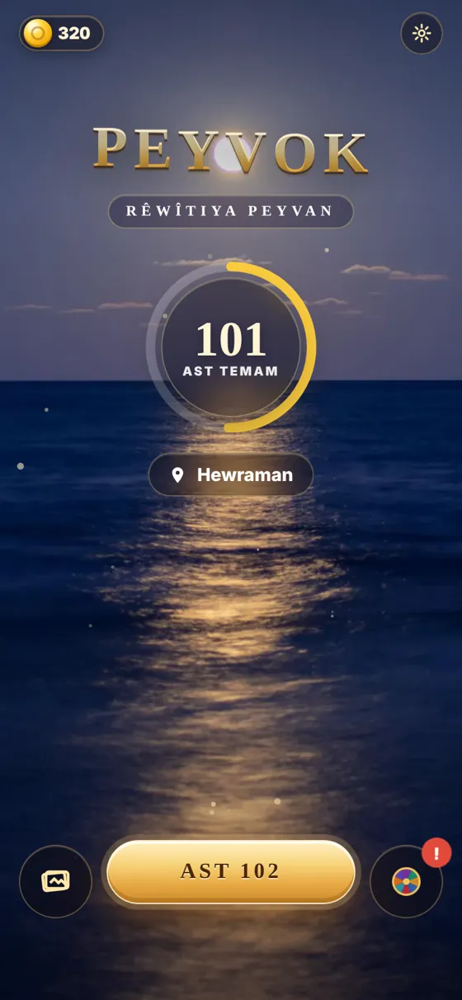
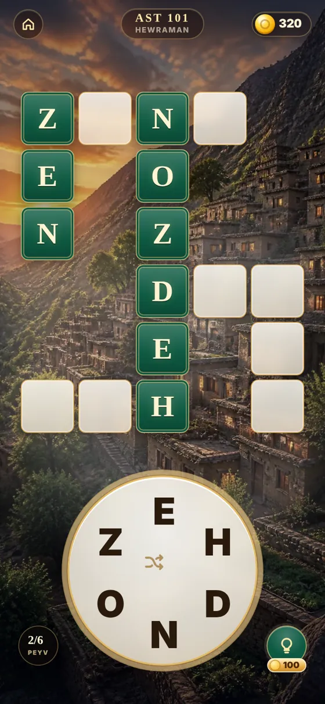
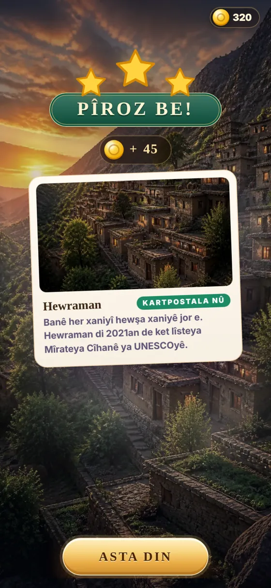

Rêwîtiya peyvan
Lîstika peyvan a bi Kurmancî. Peyvan bibîne, bi her astê re li cihên navdar ên Kurdistanê bigere.
ZÛ TÊ GOOGLE PLAYÊ Kelime oyunu · Kurmancî · Türkçe ve İngilizce arayüzTîpan li ser çerxê bi tiliya xwe girê bide, peyvan bibîne û xaçepirsê temam bike. Her deh ast te dibin cihekî nû û kartpostalekê didin te.


